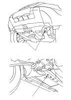
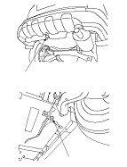

Towing
|
If the vehicle needs to be towed, call a professional towing service. Never tow the vehicle behind another vehicle with a rope or chain. It is very dangerous.
Emergency Towing
There are three popular methods of towing a vehicle.
Flat-bed Equipment −
The operator loads the vehicle on the back of a truck.
This is the best way of transporting the vehicle.
To accommodate flat-bed equipment, the vehicle is equipped with front towing hooks (A), front tie down hook slots (B), rear towing hook (C), and rear tie down hook slots (D).
The rear towing hook can be used with a winch to pull the vehicle onto the truck, and the tie down hook slots can be used to secure the vehicle to truck.
Wheel Lift Equipment −
The tow truck uses two pivoting arms that go under the tyres (front or rear) and lifts them off the ground. The other two wheels remain on the ground.
Never tow the vehicle with wheel lift equipment.
Sling-type Equipment −
The tow truck uses metal cables with hooks on the ends. These hooks go around parts of the frame or suspension, and the cables lift that end of the vehicle off the ground. The vehicle's suspension and body can be seriously damaged if this method of towing is attempted.
This method of towing the vehicle is unacceptable.
The only recommended way of towing the CR-V is on a flat-bed truck. Towing the 4WD CR-V with only two wheels on the ground will damage parts of the 4WD system. The 2WD CR-V may also be towed with the front wheels off the ground, or with all four wheels on the ground.
If the 2WD CR-V cannot be transported by a flat-bed, it should be towed with the front wheels off the ground. If the vehicle is damaged, and the vehicle must be towed with the front wheels on the ground, or if the vehicle is towed with all four wheels on the ground, do this.
Manual Transmission
Automatic Transmission
It is best to tow the vehicle no farther than 80 km (50 miles), and keep the speed below 55 km/h (35 mph).

|
Front:

Rear:
 |